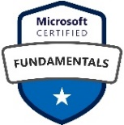
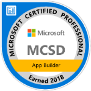
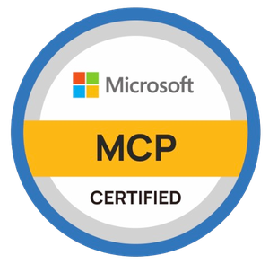

Core competencies
- Solution architecture and product development
- Designing, developing, and optimizing software architecture for enterprise applications, and turning business requirements into scalable, secure, data-driven solutions.
- Multi-tenant SaaS and data architecture
- Hybrid shared and per-tenant database models on Azure SQL Elastic Pools, tenant isolation, and data-access design.
- Cloud solutions and DevOps
- Azure infrastructure design, CI/CD pipelines, containerized deployments, identity, and secrets management for cloud-based applications.
- Database optimization
- SQL query performance tuning, stored procedures, triggers, indexing, and execution-plan analysis, applied to resolve production incidents.
- Team leadership and project management
- Leading cross-functional teams of up to 12, mentoring developers, and making sure projects are delivered.
- Applied AI and AI-assisted engineering
- Working with leading commercial AI assistants and APIs, AI coding and agent tools, and open models run locally, and integrating language models into enterprise applications.
Delivery and leadership
- Planning and management
- Define project scope and schedule with a focus on regular, timely delivery. Communicate status and metrics, prepare progress reports, manage risks and issues, address deviations from plan, and carry out delivery planning.
- Solution design
- Analyze business requirements and define how the IT solution should address them.
- Team management
- Hold teams accountable for their commitments, remove roadblocks, and use organizational resources to raise capacity. Keep every member engaged and contributing, encourage a sustainable pace with high quality, and mentor team members.
- Product owner support
- Support the Product Owner in managing customer expectations, stakeholder communication, and an effective system of project governance.
- Process improvement
- Define and run a clear project management process, and champion improvements that bring best practice in Agile project management.
- User acceptance
- Define the criteria by which software counts as functional, and help the team write UAT test cases that each cover a specific usage scenario.
Technology toolkit
The Microsoft stack and Azure services I use when I am building.
- Languages
- C#, ASP.NET Core MVC (Razor), LINQ
- Web and API
- ASP.NET Core 8 Web API, REST, Clean/Layered Architecture, Dapper, Entity Framework, Swagger
- Database
- Azure SQL (hybrid multi-tenant, Elastic Pools), SQL Server 2008–2022, query, index, and execution-plan tuning, stored procedures, triggers
- Cloud and DevOps
- Microsoft Azure (App Service and deployment slots, Blob Storage, Cosmos DB for MongoDB, Key Vault, Application Insights and Monitor), Azure AD/Entra ID, JWT and OAuth, Azure Repos and Pipelines, CI/CD, Docker, Azure Container Registry, Terraform
- AI
- Commercial AI assistants and APIs, AI coding and agent tools, local open models with Ollama (Llama, NVIDIA Nemotron 3.5), LLM integration in .NET applications
- Frontend
- JavaScript, jQuery, Bootstrap, HTML5, CSS
- Architecture patterns
- Multi-tenant SaaS design, Clean/Layered Architecture, design patterns (Observer, Adapter, Singleton, Facade)
- Integrations
- Azure AD SSO, MS Dynamics, QuickBooks, Salesforce CRM, DocuSign and HelloSign, Google Maps API
Certifications
- Microsoft Certified: Azure Solutions Architect Expert
Verify credential 
Microsoft Certified: Azure Fundamentals
Verify credential- Microsoft Certified: Azure Data Fundamentals
Verify credential 
MCSD: App BuilderCertified 2018Verify credential- MCSA: Web ApplicationsCertified 2018Verify credential

MCP: Exam 483, Programming in C#
Verify credential
Education
- Master of Computer Applications, Gautam Buddh Technical University2007 – 2010, Uttar Pradesh, India
- Bachelor of Science, CCS University2003 – 2006, Uttar Pradesh, India
- Senior Secondary (10+2), Central School for Tibetans, Mussoorie2003, Uttarakhand, India